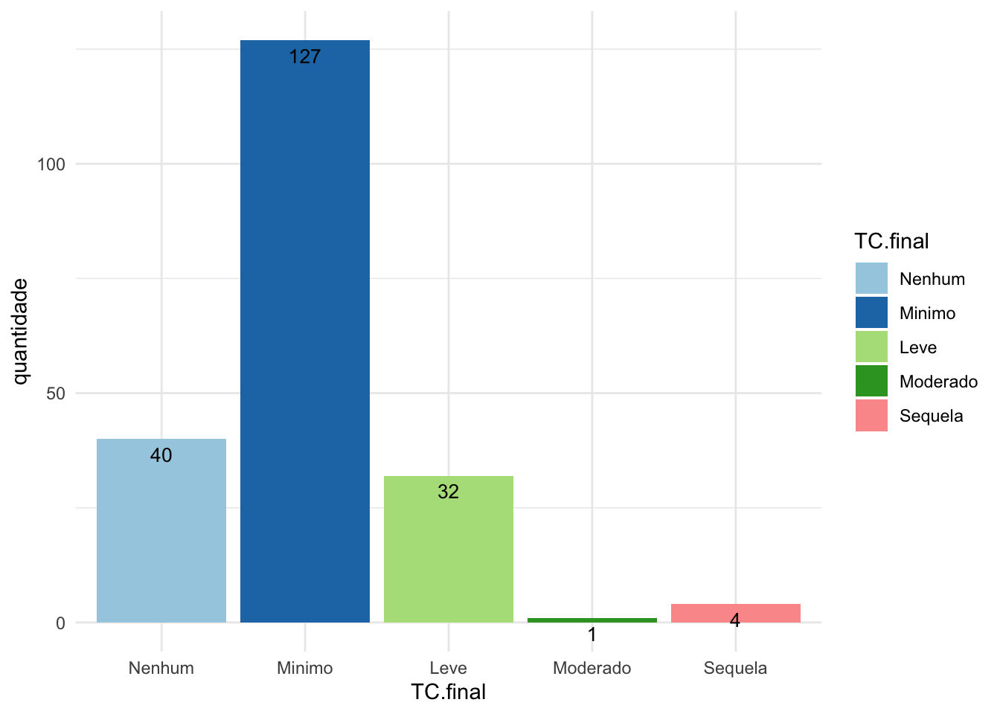

3 Relatório: Acompanhamento pós COVID-19
4 Indicação de acompanhamento de pacientes pós COVID-19
Um projeto submetido ao LabEst teve o objetivo de verificar se há indicação de acompanhamento de pacientes pós Covid-19 em relação a gravidade da tomografia computadorizada de tórax relacionada à função pulmonar, devido à possibilidade da persistência de alterações sequelares pulmonares a partir dos exames.
4.1 Análise descritiva
Temos 4 colunas nesses dados, Tabagismo, Gravidade, TC.inicial e TC.final.
- Tabagismo: Variável dicotômica indicando se há histórico de tabagismo.
- Gravidade: Variável dicotômica indicando se houveram complicações com o paciente durante a doença, como intubação.
- TC.inicial: variável categórica com a indicação da gravidade diagosticada via exame de imagem, realizada enquanto o paciente estava com COVID-19.
- TC.final: Variável categórica com a indicação da gravidade diagosticada via exame de imagem, realizada com pelo menos 60 dias após o término da doença COVID-19.
Vamos analisar os dados para TC.inicial e TC.final.

| Nenhum | Minimo | Leve | Moderado | Sequela | |
|---|---|---|---|---|---|
| Nenhum | 6 | 5 | 0 | 0 | 0 |
| Minimo | 23 | 29 | 0 | 0 | 0 |
| Leve | 11 | 65 | 9 | 0 | 0 |
| Moderado | 0 | 25 | 23 | 1 | 4 |
| Grave | 0 | 3 | 0 | 0 | 0 |
Como foi possível ver, temos poucos dados para cada uma das gravidades, nas variáveis categóricas TC.inicial e TC.final, logo foi preciso utilizar um método alternativo para olhar o problema, pois caso contrário não haveria amostras o suficiente para as análises, ficariam imprecisas. A maneira encontrada foi abordar o problema de modo a ter apenas 3 classes para o quadro pulmonar do indivíduo, igual ou estável, melhora e piora. Aqueles que estão na diagonal principal serão vistos como os que mantém sua condição como Igual ou estável, os que estão abaixo da diagonal principal representam os indivíduos que melhoraram e por fim aqueles acima da diagonal principal representam os que tiveram piora de quadro.
4.2 Quadro do paciente
4.2.0.0.1 Estimativas pontuais
O valor médio estimado para cada classe foi de:
| Igual | Melhora | Piora |
|---|---|---|
| 0.2222224 | 0.7294691 | 0.04830851 |
4.3 Análise: Quadro em relação ao Tabaginsmo
Agora é preciso investigar se dado o histórico de tabagismo da pessoa, o indivíduo será afetado ou não.
| Nenhum | Minimo | Leve | Moderado | Sequela | |
|---|---|---|---|---|---|
| Nenhum | 6 | 3 | 0 | 0 | 0 |
| Minimo | 18 | 21 | 0 | 0 | 0 |
| Leve | 7 | 41 | 6 | 0 | 0 |
| Moderado | 0 | 20 | 17 | 0 | 1 |
| Grave | 0 | 3 | 0 | 0 | 0 |
| Nenhum | Minimo | Leve | Moderado | Sequela | |
|---|---|---|---|---|---|
| Nenhum | 0 | 2 | 0 | 0 | 0 |
| Minimo | 5 | 8 | 0 | 0 | 0 |
| Leve | 4 | 24 | 3 | 0 | 0 |
| Moderado | 0 | 5 | 6 | 1 | 3 |
| Grave | 0 | 0 | 0 | 0 | 0 |
[1] 0.94421| Estimativa | Desvio padrão | |
|---|---|---|
| Estável | 23.29 | 3.48 |
| Melhora | 73.29 | 3.65 |
| Piora | 3.42 | 6.97 |
| Estimativa | Desvio padrão | |
|---|---|---|
| Estável | 20.31 | 4.99 |
| Melhora | 70.31 | 5.67 |
| Piora | 9.38 | 9.99 |
Primeiramente chamamos a atenção, para a seção Estimativas, onde pode-se ver que pessoas sem histórico de tabagismo possuem uma menor tendência de piora no seu quadro pulmonar, enquanto que aqueles que possuem histórico, possuem 3x mais chance de piorarem de quadro. Importante notar também que tanto para melhora quanto para estabilidade, não se tem uma grande diferença, algo que está evidente na seção gráficos.
Utilizando um gráfico, é possível ver que os dados estão bem agrupados, com a diferença que aqueles que possuem histórico de tabagismo possuem uma maior variância. Sendo assim, não é aconselhável o acompanhamento para eses grupos, pois as pessoas tem uma tendência de melhorar, e para ambos os grupos essa tendência é relativamente homogênea.
4.3.1 Hipótese: Tabagismo é um fator de risco ?
Baseado nos dados apresentados, as estimativas dão indícios de que pessoas com histórico de tabagismo possuem um certo grau de piora no seu quadro pulmonar, sendo assim é necessários descobrir, se dado o histórico positivo qual a probabilidade de um indivíduo qualquer, possuir uma piora no seu quadro pulmonar.
\[ Hipotese: \text{Possui Historico} < \text{Não Possui Historico } \] Baseado na hipótese acima, o esperado é que os pacientes com o histórico positivo de tabagismo, tenham uma queda pequena na taxa para o quadro estável e o de melhora, ou seja ocorre um crescimento na taxa de piora. A taxa de piora foi apurada como \(94\%\) para indivíduos com histórico positivo para tabagismo.
Sendo assim, temos evidências que nos levam a acreditar que o tabagismo é um fator de risco a ser observado, durante a infecção da COVID-19.
4.4 Análise: Quadro em relação a Gravidade
Agora checaremos se deve ser aconselhado acompanhamento a pacientes que possuíram complicações durante o período de infecção da COVID-19.
| Nenhum | Minimo | Leve | Moderado | Sequela | |
|---|---|---|---|---|---|
| Nenhum | 5 | 2 | 0 | 0 | 0 |
| Minimo | 21 | 22 | 0 | 0 | 0 |
| Leve | 6 | 28 | 5 | 0 | 0 |
| Moderado | 0 | 3 | 5 | 0 | 0 |
| Grave | 0 | 0 | 0 | 0 | 0 |
| Nenhum | Minimo | Leve | Moderado | Sequela | |
|---|---|---|---|---|---|
| Nenhum | 1 | 3 | 0 | 0 | 0 |
| Minimo | 2 | 7 | 0 | 0 | 0 |
| Leve | 5 | 37 | 4 | 0 | 0 |
| Moderado | 0 | 22 | 18 | 1 | 4 |
| Grave | 0 | 3 | 0 | 0 | 0 |
| Estimativa | Desvio padrão | |
|---|---|---|
| Estável | 33.00 | 4.68 |
| Melhora | 63.99 | 4.77 |
| Piora | 3.02 | 9.35 |
| Estimativa | Desvio padrão | |
|---|---|---|
| Estável | 12.73 | 3.16 |
| Melhora | 79.99 | 3.79 |
| Piora | 7.28 | 6.33 |

Aqui é importante ressaltar que para os grupos de gravidade, cada exame registrado na variável TC.inicial e TC.final, possuem uma diferença de 60 dias, nesse período quem tem uma complicação possui uma maior chance de sair dela, ou seja, deixa a condição estável e passa para a de melhora, poucos serão aqueles que não irão melhorar.
Por essa razão é possível notar uma relação inversa entre a condição estável e a condição melhora, adicionado ao fato que pessoas que estão com Gravidade negativa, possuem uma tendência de continuarem estáveis, por isso uma menor variâcia é registrada para esse grupo. Sendo assim nos resta chamar atenção a uma taxa de piora de 7% para os que possuem Gravidade positiva, e por fim não aconselhamos o acompanhamento desses pacientes.
4.4.1 Hipótese: A Gravidade é um fator de risco ?
Estimando a partir dos dados, foi possível notar na tabela 9 que possuímos um grau maior de piora nos pacientes entubados. Agora é preciso saber qual a probabilidade de um paciente piorar devido a ocorrência de complicações durante o tratamento da COVID-19, ou seja:
\[ Hipótese: Com \ Complicações < Sem \ Complicações \] Essa hipótese se baseia no fato de que, caso o paciente não tenha melhorado, ou se mantido estável, então o indivíduo só pode ter piorado o seu quadro. Logo é possível afirmar que aqueles com registro de complicaçõão possuem \(91\%%\) de probabilidade de terem uma piora no seu quadro pulmonar, sendo assim temos evidências de que Gravidade é um fator de risco.